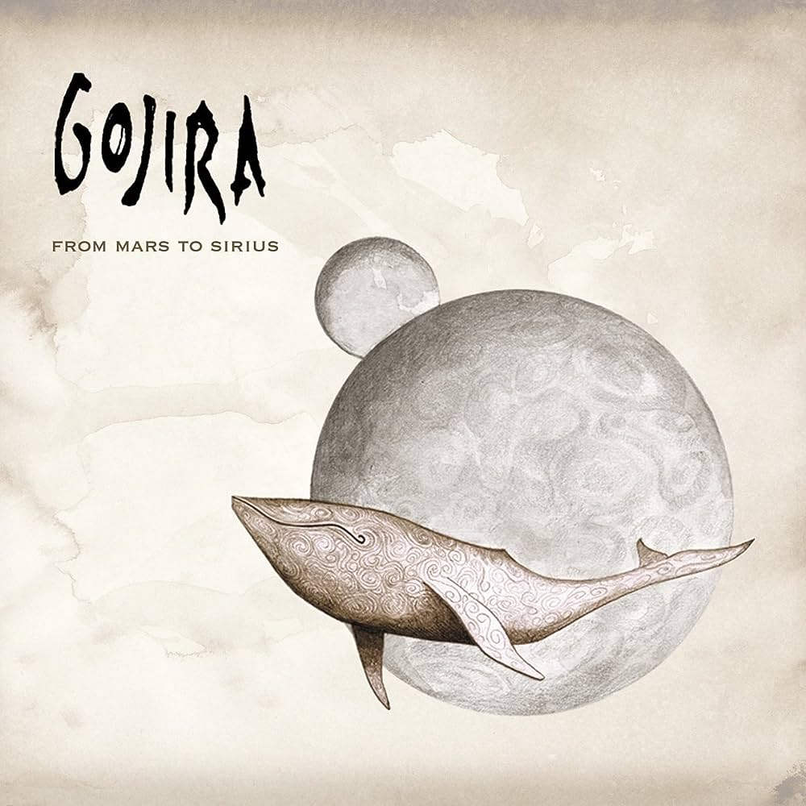
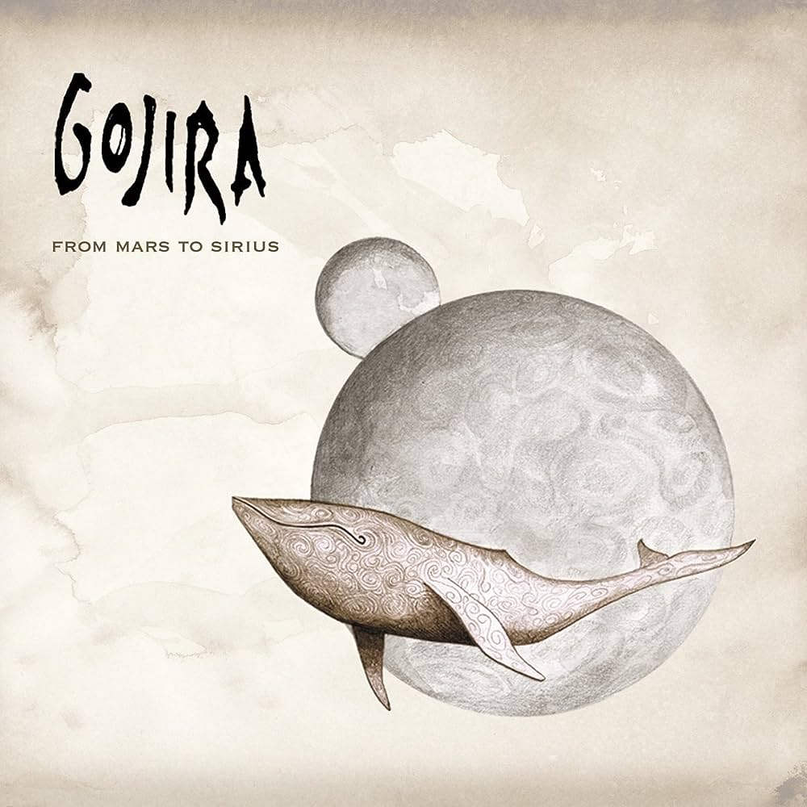
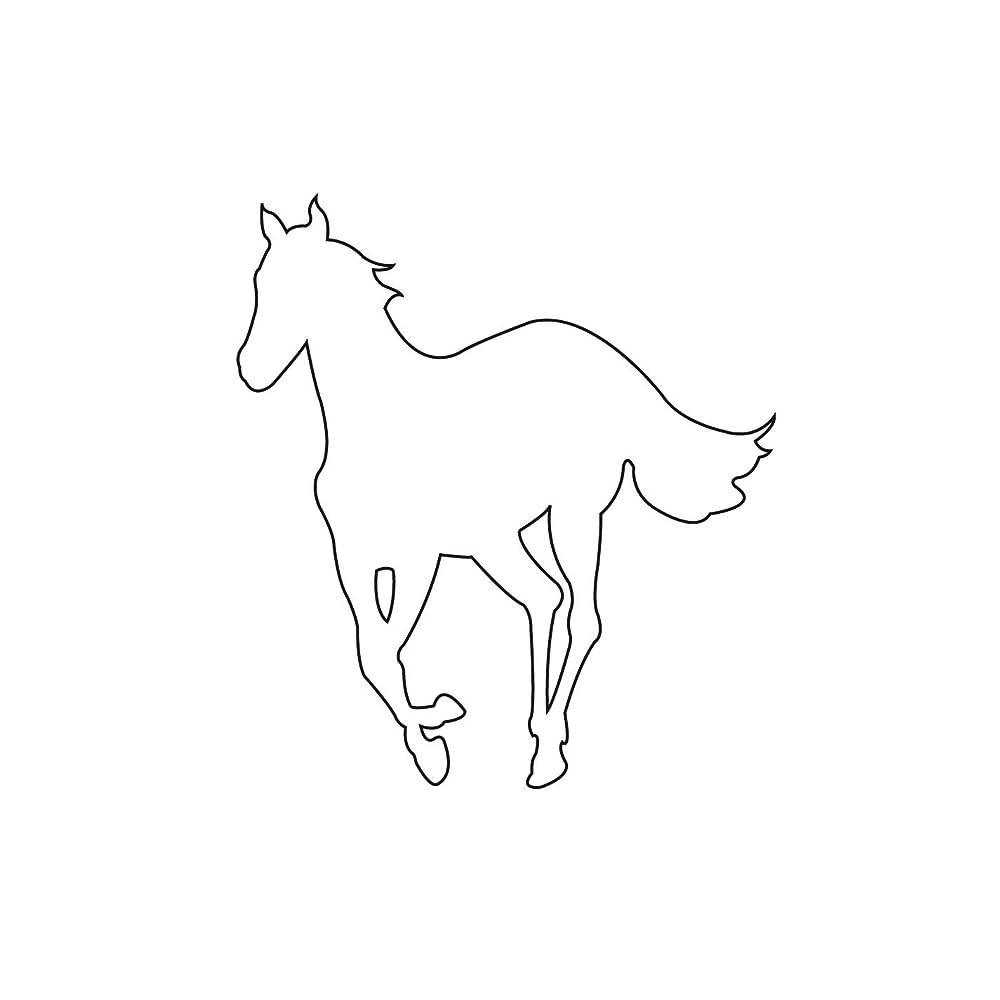
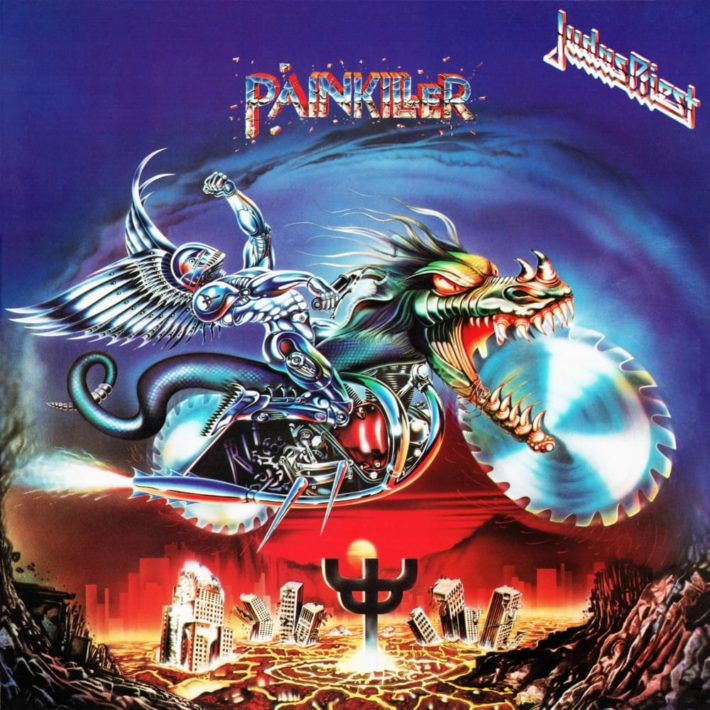

Welcome To My Home Page! ٩(◕‿◕)۶

 

✮⋆˙Genre: Progressive Metal, ✮⋆˙Favorite Song: Flying Whales
"From Mars to Sirius" paints a beautiful storyline of the rebirth of a dead planet and tackles environmental issues and their impact on marine life. Not just focused on the environment, the album deals with larger themes of life, death, and rebirth, and the storytelling method reminds me greatly of Pink Floyd's "Animals". The tumultous soundscape and call to action against climate change is what makes this album so amazing to me.

✮⋆˙Genre: Nu Metal, ✮⋆˙Favorite Song: Disasterpiece
I was never into Slipknot until I heard "Iowa". Songs like "Disasterpiece" and "People=Shit" embody anger and pain in such an incredible way, and you can truly feel the hardships the band was going through at that time. The title track is an indescribable soundscape, and reminds me of "Revolution 9" by The Beatles. The instrumental is extremely technical and even so, the entire album is emotional and raw.

✮⋆˙Genre: Nu Metal, ✮⋆˙Favorite Song: Needles
"Toxicity" by System Of A Down is incredible! From the political outcry of "Prison Song", to the floaty sound of "Aerials", the album is truly a rollercoaster. "Chop Suey!" is a song many people like myself grew up hearing in the 2000's. I have probably heard the song hundreds of times and Serj and Daron's harmonizations in the last part of the song still give me the chills. Getting more into System Of A Down's other music, I always find the political and social commentary and their music fascinating, and an outlook into the early 2000s.
✮⋆˙Genre: Alternative Metal, ✮⋆˙Favorite Song: Pink Maggit
"White Pony" is meticulous and fascinating. Chino Moreno's versatile and unique voice really shines in this album, from his longing sound in "Change In the House of Flies" to the harsh vocals of "Elite". The band's heavy shoegaze influence is prevalent and the band breaks through their nu-metal categorization with this revolutionary album. I personally love how the album goes full circle, beginning with "Mini Maggit" and ending on "Pink Maggit".
...now let's go further back in time...
✮⋆˙Genre: Progressive Metal, ✮⋆˙Favorite Song: Jimmy
AEnima by TOOL is a bold and innovative album with a mystical sound. The sound is simultaneously heavy yet soft, intense yet beautiful, and deep yet humorous. AEnima is one of those albums where I can remember exactly where and when I was when I first listened to it. Not to mention the album cover is amazing! (definitely need it in my CD collection (-‿◦☀)~)
✮⋆˙Genre: Speed Metal, ✮⋆˙Favorite Song: All Guns Blazing
"Painkiller" has crazy, wailing vocals, like AC/DC but amped up 20x. The pure speed, instrumental intensity, creative riffs, and high-pitched vocals make it a wild ride. This is one of my favorite albums for if I need an energy boost. I always enjoy watching Judas Priest perform these songs, where they really seem to feed off each others' and the crowds energy, making for really exciting live performances.

✮⋆˙Genre: Groove Metal, ✮⋆˙Favorite Song: Domination
"Domination" was one of the first songs I heard when I was getting into metal and the guitar solo blew my mind. Then, I watched Pantera's Moscow 91 performance of the song and was even more amazed. Listening to this album and more Pantera songs, their creativity and passionate, emotional guitar solos will always inspire me (such as Floods and 10's). The interplay between guitar and voice in "Cemetary Gates" and the heavy breakdown of "Domination" are a couple of the standouts for me.

✮⋆˙Genre: Thrash Metal, ✮⋆˙Favorite Song: Creeping Death
And of course I had to include Metallica! Metallica expanded in such a beautiful way from their previous album "Kill 'Em All" to "Ride The Lightning", utilizing acoustic sounds, extended instrumentals, and more complex harmonies. I really love the transitions in each of the songs, including the intro of "Fade to Black" and the heavy half time sound of "Creeping Death". This coupled with the sheer technical ability of the band's members makes the album unforgettable.
Some more top picks: Black Sabbath - Paranoid, Pantera - Vulgar Display of Power, Metallica - Master of Puppets, Iron Maiden - Powerslave, Megadeath - Rust In Peace, Obituary - Cause of Death, Death - Symbolic, Korn - Korn, Linkin Park - Hybrid Theory, BABYMETAL - METAL GALAXY
♪ thank you for visiting my page and reading about my favorite metal albums!! ♪ （〜^∇^ )〜♪